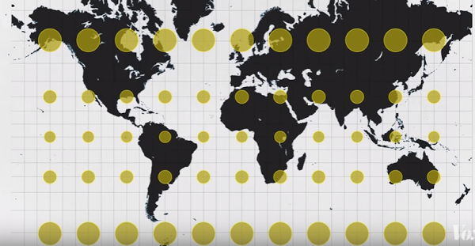

The Earth isn't flat. If this doesn’t come as a surprise to anyone (which I hope it doesn’t,) it is because it is the first of many lies told by the Mercator projection, the name used to describe the projection of the world which everyone has encountered and probably studied in school. The map was named after its designer, Flemish mathematician, cartographer and geographer Mercator, who created the map in 1569. This projection is a cylindrical projection, meaning that it acts as if the globe was put inside a cylinder and points on the globe were reported on that cylinder. Once unfolded, the result is a 2D projection of the Earth.
However, with the initial purpose of this map being navigation, Mercator had to implement a few modifications in order to preserve directions. For that, he had to vary the distance between the latitude lines and to straighten them in order to obtain a grid of latitude and longitude lines, crossing at right angles. This way, the line drawn between two points on the map would provide the angle to follow which was ideal for navigators who only had a compass to get their bearings. The division happens between Europe and the East Coast of the USA, because it made sense to divide a non-populated area which was the ocean.
The main problem of this projection is that, although it generally preserves the shape of the countries and continents and the local angular relationships, it fails in its representation of size. The closer the land is to the top poles, the more distorted it becomes. If you drew circles on the globe and then unfolded it like Mercator's projection, you'd observe that the circles would have conserved their circular shape, however, they would be much bigger as they approach the poles. This method is called the Tissot Indicatrix, and the circles used have a radius of 500 km (around 311 miles,) meaning each circle has the same area.
The End of the Myths – the Problems of the Mercator's Projection
The Mercator's Map shows the developed countries as being much bigger than they truly are, and much bigger compared to reality than the third-world countries or countries in development. This reinforces the feeling of domination of the developed countries over the developing ones, and seems to show very unfairly what parts of the world are "governing."
Still with that view in mind, the countries most affected by wars, poverty, natural disasters, famine and diseases are coincidentally the ones appearing smaller. This observation engenders in our minds a process of exculpation: the problems faced by those countries don't matter as much since the countries look so much tinier.
The ratio of water/continent isn't obeyed, because the earth is made up of around 71% of water, with the remaining 29% consisting of land and islands. Difficult to realise, isn't it? This reinforces the dominating feeling of humans over the rest of nature, yet, we don't even inhabit half of the Earth. This is impossible to deduce or realise from glancing at the map sitting in most classrooms.
The map depicts Greenland and Africa as being about the same size, when in reality Greenland is 14 times smaller than Africa.
Russia is actually smaller than Africa, Madagascar is bigger than Sweden, Iceland is about the same size as Tasmania, and most of the continents could fit in Africa. There are loads of other examples, but it'd be too long of a list to write here! Difficult to believe? The website thetruesize.com allows you to see for yourself.
The Politics of Perception
Maps are a perfect demonstration of the politics of perception – how what you see affects what you think – and the orientation of a map does control our perception of the world. For example, the ideas of South, North, East and West are “rhetorical and social constructions,” but the Mercator's map is so implemented in our minds that any other map seems strange and sometimes even wrong in its representation of the world. For the audience, what they read from the map becomes their reality. Indeed, maps have the immense power of shaping a person's perception of the world. This is precisely why it's so important to look at other maps – because maps are “rather an argument presented than a reality.” The various projections of the world show us different aspects of it every time, and from those, political, social and environmental conclusions and beliefs will be inferred. The ratio water/continents as well as the strategic placing of countries on the maps are two factors which have a big impact on our perception – one feels smaller when realising how much water surrounds us. Deciding what countries to place in the north or south also has a huge effect on that it is linked to the idea that countries in the southern hemisphere have less of a role to play - historically most colonies were located in the southern hemisphere and belonged to richer countries located above the equator.
Countries tend to use maps in which their country sits in the middle, as it is an easier point of reference. However, this presents the disadvantage of instilling in the people's minds, probably unconsciously, that their country is quite literally at the center of the world and that the other continents sit around them, which, needless to say, is not true. For example, we can observe here the Mercator's map, designed by a Flemish person, hence the placing of Europe in the middle. In Japan and Australia it is also noticeable that their country is placed approximately in the middle of the map.

The Ethics of Mapmaking
The mapmaker has huge responsibilities – the way the world is going to be seen is put in their hands. Depending on where they position some countries, the audience's interpretation will give more political weight and consideration to those countries. The mapmaker creates the map through their vision of the world, and this lense will be used by the audience to read the map, hence the subjectivity and bias of maps. Indeed, maps “socially and culturally construct the earth through different scales and perspectives.”
What Map to Use?
The alternative to Mercator's map is often that of Galls Peter, created in 1974. This one preserves land area but distorts shapes completely – the circles mentioned before would look as if they were stretched horizontally near the poles whereas the circles closer to the equator would look stretched vertically. The countries look extremely unfamiliar, but their size is accurately depicted.
The Cassini Projection – late 174Os
The globe is rotated so that the central meridian (an imaginary half-circle of the surface of the Earth which joins the two poles) becomes the equator (“a line notionally drawn on the earth equidistant from the poles, dividing the earth into northern and southern hemispheres and constituting the parallel of latitude 0°”). It shows many more ocean and seas than the map we're accustomed to, and places Africa in the middle, unconsciously suggesting its being one of the main actors in today's world. Furthermore, cartographers have agreed on a variety of non-rectangular maps which are each relatively accurate in their depiction of the world – each used for a different purpose. In the end, the most accurate depiction of the Earth is a globe (even though the Earth is not a perfect sphere.)
In conclusion, maps aren't the only way we have to evaluate the countries around us, but they have the advantage of being more convenient than globes to study on and to use. However, projecting a sphere onto a 2D rectangular surface is impossible, and compromises have to happen between shape, distance, direction, and land area accuracy, which leads to common misbeliefs and biased perceptions of the world we live in, acting on our sub-conscience most of the time. The Mercator's Map, for example, has the modern accusation of reinforcing appearances of the domination of developed countries over third-world countries, due to the distortion of the countries located nearest to the poles. More accurate equivalents were designed, but those don't beat the “pleasing aesthetic” of Mercator's Map. It is also interesting to notice that the view of the people depended on what they were presented with, and it raises the question of how, in the age of capitalism and global warming, we choose to represent our planet. It brings us to wonder how our view of the world would differ if we hadn't been brought up with the Mercator's Map. It also warns us of the powers put in the hands of one man, be it for drawing the world, controlling the economy, or leading a country.
Sources:
https://www.universetoday.com/65588/what-percent-of-earth-is-water/
https://blog.richmond.edu/livesofmaps/2014/10/29/the-cassini-projection-how-should-earth-be-portrayed/
http://map-projections.net/compare.php?p1=winkel-tripel&p2=winkel-tripel-bartholomew&w=1&sm=1&d=1
https://www.google.fr/url?sa=i&rct=j&q=&esrc=s&source=images&cd=&cad=rja&uact=8&ved=0ahUKEwjW1_WFgM_VAhVDWxoKHf4uCf0QjRwIBw&url=http%3A%2F%2Fkai.sub.blue%2Fen%2Fafrica.html&psig=AFQjCNHBmBbteKAdTqeEjcgYJYplSSv2vQ&ust=1502534685752397
https://youtu.be/kIID5FDi2JQ
https://youtu.be/S3R-rP8dawM
https://youtu.be/g3ginHk6eB0
https://youtu.be/8F2gjh_iXM8
https://www.google.fr/url?sa=i&rct=j&q=&esrc=s&source=images&cd=&cad=rja&uact=8&ved=0ahUKEwj5kp6fg8_VAhVEOxoKHZwqB44QjRwIBw&url=https%3A%2F%2Fwww.scienceabc.com%2Fsocial-science%2Fwhat-is-wrong-with-all-our-maps.html&psig=AFQjCNE7zBebQc1EG43tGvCEYGqSmGRpNQ&ust=1502535540587642